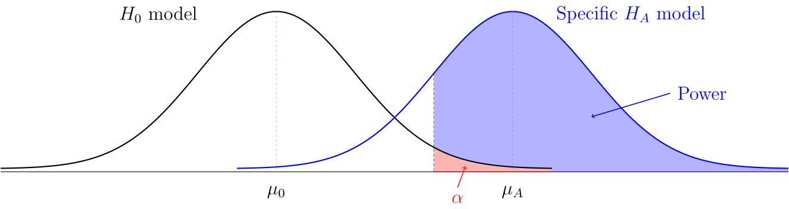
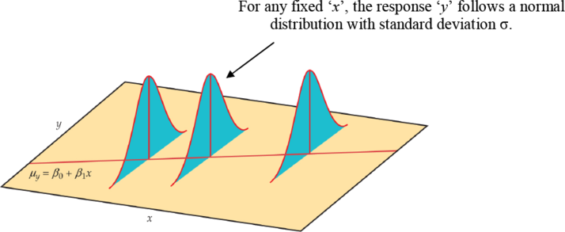

| Day | Section | Topic |
|---|---|---|
| Mon, Jan 12 | Working with R and Rstudio | |
| Wed, Jan 14 | 1.3 | Sampling principles and strategies |
| Fri, Jan 16 | 1.4 | Experiments |
Today we went over the course syllabus and talked about making R-markdown files in Rstudio. We started the following lab in class, I recommend finishing the second half on your own. I also recommend installing Rstudio on your own laptop (it’s free).
Today we reviewed populations and samples. We started with a famous example of a bad sample.
Then we reviewed population parameters, sample
statistics, and sampling frames. The
difference between a sample statistic and a population parameter is
called the sample error.
There are two sources of sample error:
Bias. Can be caused by a non-representative sample (sample bias) or by measurement errors, non-response, or biased questions (non-sample bias). The only way to avoid sample bias is a simple random sample (SRS) from the whole population.
Random error. This is non-systematic error. It tends to get smaller with larger samples.
To summarize:
We finished with this workshop.
If you find an association between an explanatory variable and a response variable in an observational study, then you can’t say for sure that the explanatory variable is the cause. We say that correlation is not causation because there might be lurking variables that are confounders, that is, they are associated with both the explanatory and response variables and so you can tell what is the true cause.
It turns out that randomized experiments can prove cause and effect because random assignment to treatment groups controls all lurking variables. We also talked about blocking and double-blind experiments.
Example: 1954 polio vaccine trials
Workshop: Experiments
We finished by simulating the results of the polio vaccine trials to see if they might just be a random fluke. We wrote this R code in class:
results = c()
trials <- 1000
for (x in 1:trials) {
simulated.result <- sample(c(0,1), size = 244, replace = TRUE)
percent <- sum(simulated.result) / 244
results <- c(results, percent)
}
hist(results)
sum(results < 0.336) / trials| Day | Section | Topic |
|---|---|---|
| Mon, Jan 19 | Martin Luther King day - no class | |
| Wed, Jan 21 | 2.1 | Examining numerical data |
| Fri, Jan 23 | 3.2 | Conditional probability |
Today we did a lab about using R to visualize data.
You should be able to open this file in your browser, then hit CTRL-A and CTRL-C to select it and copy it so that you can paste it into Rstudio as an R-markdown document.
We had a little trouble with R-markdown on the lab computers.
Last time we talked about how to visualize data with R. Here are two quick summaries of how to make plots in R:
After that, we started talking about probability. We review some of the basic rules.
The notation means “the probability of B given that A happened”. Two events and are independent if the probability of does not depend on whether or not happens. We did the following examples.
We also talked about tree diagrams (see subsection 3.2.7 from the book) and how to use them to compute probabilities.
Based on a study of women in the United States and Germany, there is an 0.8% chance that a woman in her forties has breast cancer. Mammograms are 90% accurate at detecting breast cancer if someone has it. They are also 93% accurate at not detecting cancer in people who don’t have it. If a woman in her forties tests positive for cancer on a mammogram screening, what is the probability that she actually has breast cancer?
5% of men are color blind, but only 0.25% of women are. Find .
| Day | Section | Topic |
|---|---|---|
| Mon, Jan 26 | Class canceled (snow) | |
| Wed, Jan 28 | 4.1 | Normal distribution |
| Fri, Jan 30 | 3.4 | Random variables |
Class was canceled today because I had a doctor’s appointment. But I
recommended that everyone watch the following video and then complete a
workshop about the R functions pnorm, qnorm,
and rnorm.
Today we talked about random variables and probability distributions. We talked about some example probability distributions:
Flip a coin until you get a tail. Let represent the number of flips needed. (geometric distribution)
About 1 meteorite bigger than 1000 kg hits the Earth every year. The time until the next meteorite hits the Earth has probability density function . (exponential distribution)
We talked about the difference between continuous and discrete probability distributions. Then we introduced expected value.
If is a discrete random variable, then the expected value of is If is a continuous random variable with probability density function , then the expected value of is
We did the following example.
We finished by talking about what we mean when we say something is “expected”.
If you repeat a random experiment many times, then the average outcome tends to get close to the expected value.
| Day | Section | Topic |
|---|---|---|
| Mon, Feb 2 | 3.4 | Random variables - con’d |
| Wed, Feb 4 | 4.3 | Binomial distribution |
| Fri, Feb 6 | 5.1 | Point estimates and error |
For a random variable with expected value , the variance of is The standard deviation of (denoted ) is the square root of the variance.
We did these examples in class.
Here is an extra example from Kahn academy that we did not do in class.
Suppose a random variable has the following probability model.
|
0 |
1 |
2 |
3 |
4 |
|
|
0.1 |
0.15 |
0.4 |
0.25 |
0.1 |
Expected value is linear which means that for any two random variables and and any constant , these two properties hold:
Variance is not linear. Instead it has these properties:
A single six-sided die has expected value and standard deviation . What is the mean and standard deviation if you roll two dice and add them?
Binomial distribution. If is the total number of successes in independent trials, each with probability of a success, then has a binomial distribution, denoted for short. This distribution has
We used this binomial distribution plotting tool to compare the distributions if you make these two bets 100 times. In one case we get something that looks roughly like a bell curve, in the other case we get something that is definitely skewed to the right.
pbinom(x, n, p) function in R.Sometimes the assumption that the trials are independent is not justified.
The correct probability distribution to model the example above is called the hypergeometric distribution. As long as the population is much larger than the sample, we typically do not need to worry about the trials not being independent.
We finished by discussing the normal approximation of a binomial distribution. When is large enough so that both and , then is approximately normal with mean and standard deviation .
Suppose that are independent random variables that all have the same probability distribution. If is large, then the total has an approximately normal distribution.
If each has mean and standard deviation , then what is the mean and the standard deviation of the total?
In Dungeons and Dragons, you calculate the damage from a fireball spell by rolling 8 six-sided dice and adding up the results. This has an approximately normal distribution. What is the mean and standard deviation of this distribution. (Recall that the mean and standard deviation of a single six-sided die is and ).
We looked at a graph of the distribution from the previous example to see that it is indeed approximately normal.
When you use a normal approximation to estimate discrete probabilities, it is recommended to use a continuity correction (see Section 4.3.3). To estimate , calculate using the normal approximation (and likewise, to estimate , compute using the normal approximation).
An important special case of the central limit theorem is the normal approximation of the binomial distribution, which has mean and standard deviation .
pbinom(x, n, p) function.We finished by talking about the difference between the distribution of the total versus the distribution of the proportion of patients who are O-negative. The standard deviation of the sample proportion is
| Day | Section | Topic |
|---|---|---|
| Mon, Feb 9 | 5.2 | Confidence intervals for a proportion |
| Wed, Feb 11 | Review | |
| Fri, Feb 13 | Midterm 1 |
Today we talked about confidence intervals for a proportion.
Sampling Distribution for a Sample Proportion. In a SRS of size from a large population, the sample proportion is random, so it has a probability distribution with the following features.
In practice, we usually don’t know the population proportion . Instead we can use the sample proportion to calculate the standard error of :
If the sample size is large enough, then there is a 95% chance that will be within about two standard deviations of . So if we know and we assume that the standard error is close to the standard deviation for , then we can make a confidence interval for the location of the parameter .
Confidence Interval for a Proportion. This works well if the sample size is very large.
You can use the R command qnorm((1 - p) / 2) to find the
critical z-value
()
when you want a specific confidence level
.
After that, we talked about the prop.test() function in
R which can make a confidence interval (among other things).
Notice that the prop.test() confidence interval is not
the same as what we got using the formula above. Instead of using the
formula above, R uses something called a Wilson
score confidence interval with continuity correction. The idea is to
solve for the two points
where
If you add in the continuity correction, this pretty much guarantees
that there is at least a 95% chance (or whatever other confidence level
you want) that the interval contains the true population parameter. The
Wilson method confidence intervals are fairly trustworthy even with
relatively small samples and small numbers of successes/failures.
Today we went over the midterm 1 review problems (the solutions are also available now). We also did some additional practice problems including these.
If you draw a random card from a deck of 52 playing cards, what is the probability that you draw an ace or a heart?
Suppose you need knee surgery. There is an 11% that the surgery fails. There is a 4% chance of getting an infection. And there is a 3% chance of both infection and the surgery failing. What is the probability that the surgery succeeds without infection?
In the Wimbledon tennis tournament, serving players are more likely to win a point. A server has two chances to serve the ball. There is a 59% chance that the first serve is in, and if it is, then the server has a 73% chance of winning the point. If the first serve is out, then they have an 86% of getting the second serve in, and in that case they have a 59% chance of winning the point. But if the second serve is out, then the server automatically loses the point.
| Day | Section | Topic |
|---|---|---|
| Mon, Feb 16 | 5.3 | Hypothesis tests for a proportion |
| Wed, Feb 18 | 6.2 | Difference in two proportions |
| Fri, Feb 20 | 6.2 | Difference in two proportions - con’d |
Today we talked about hypothesis testing, specifically testing hypotheses about a population proportion. We looked at three examples.
In the helper versus hinderer student, 14 out of 16 infants chose the helper toy. Could this be a random fluke? To find out we can do a hypothesis test for proportions.
prop.test() function in
this situation?When you do a hypothesis test, typically you choose a significance level α in advance, and then you calculate a p-value. A p-value is the probability of getting a result at least as extreme as the statistic, if the null hypothesis is true: If the p-value is below the significance level, then you should reject the null hypothesis. The following things are all equivalent:
Conversely, if the results are not statistically significant, then we don’t reject the null, and we should be aware that the results might be a random fluke. Be careful, a common misunderstanding is to think that the p-value is . The p-value does not directly tell you the probability that the null hypothesis is true, it only indirectly suggests that the null might not be true.
In another study, researchers presented 100 college students the images of two men (see the link above) and asked them to guess which was named Tim and which was named Bob. It turned out that 67 students guessed that Tim was the man with the goatee.
If someone gets 10 out of 25 guesses about what Zener card someone is looking at, is this strong evidence that they are psychic? Do a hypothesis test to find out.
The null hypothesis in the last example is that the person is not
psychic, so they only have a 1 out of 5 chance of guessing right. Here
is how you test this using the prop.test() function in
R.
prop.test(10, 25, p = 0.2, alternative = "greater")We talked about how to compare two proportions using confidence
intervals and hypothesis testing. We started by talking about how the
prop.test() function in R can accept a vector of successes
and another vector of totals for more than one group. We used this to
analyze the following study.
A 2002 study looked at whether nicotine lozenges could help smokers who want to quit. The subjects were randomly assigned to two treatment groups. One group got a nicotine lozenge to take when they had cravings, while the other group got a placebo lozenge. Of the 459 subjects who got the nicotine lozenge, 82 successfully abstained from smoking, while only 44 out of the 458 subjects in the placebo did.
We created an R-markdown document to answer these questions in class.
After we did that example, I let everyone work on a similar example on their own:
| Rural | Urban/Suburban | |
| Passed | 30 | 52 |
| Failed | 25 | 13 |
| Total | 55 | 65 |
Use R to visualize the results and carry out a hypothesis test to see if background make a significant difference in student pass rates.
We started with this example that we did not have time for last time.
| Male | Female | |
| Passed | 60 | 23 |
| Failed | 29 | 11 |
| Total | 89 | 34 |
After that we talked briefly about the theory behind the two-sample test for proportions.
Theorem. If and are independent random variables that each have a normal distribution, then also has a normal distribution.
If we take two simple random samples from two populations, the two sample proportions and are each approximately normally distributed.
Two-Sample Hypothesis Test for Proportions.
where is the pooled proportion:
Works best if both samples have at least 5 successes & 5 failures.
Two-sample Confidence Interval for Proportions.
Works best if both samples contain at least 10 successes and 10 failures.
We also talked about one-sided confidence intervals,
which you get automatically in R when you set the
alternative option to either "greater" or
"less".
We finished by introducing the chi-squared statistic where is the expected count in row , column (assuming there is no association), and is the observed count in row , column .
| Day | Section | Topic |
|---|---|---|
| Mon, Feb 23 | 6.4 | Chi-squared test for association |
| Wed, Feb 25 | 6.3 | Chi-squared goodness of fit test |
| Fri, Feb 27 | 7.1 | One-sample means with t-distribution |
You can use the chi-squared test for association to see if there is a significant association between two categorical variables. We did this example using R.
We talked about the difference between long tables (also known as tidy tables) where each row represents one individual and each column represents a variable, versus two-way tables (also known as contingency tables) where the rows and columns represent categories for two categorical variables and the numbers in the table are the counts.
You can easily convert a long table stored as a data frame in R to a
two-way table using the table() function. You can transpose
a two-way table (swap the rows & columns) using the function
t().
We also talked about mosaic plots as an alternative to stacked bar graphs for showing the relationship between two categorical variables.
We did this example:
Suppose that a random sample of 100 people in a city are asked if they think the fire department is doing a satisfactory job. Shortly after the survey, there is a large fire in the city. If the same 100 people are asked their opinions again, you might get results like this:
|
Satisfactory |
Unsatisfactory |
|
|
Before |
80 |
20 |
|
After |
72 |
28 |
For this table, with a p-value of 18.5%. Why should you not trust this p-value?
The right way to look at this data is to include each person once. Each individual person has their before opinion and their after opinion recorded, so we could make a two-way table for those two variables:
|
Satisfactory Before |
Unsatisfactory Before |
|
|
Satisfactory After |
70 |
2 |
|
Unsatisfactory After |
10 |
18 |
We ran out of time at the end, but I gave the following handout as extra practice to think about the chi-squared test for association.
Today we introduced the chi-squared goodness of fit test. It is a lot like the chi-squared test for association, except instead of having two categorical variables, you just have one and you are testing to see whether the proportions in each category from the sample match some model for what the population should be.
We started with this question:
We tested the hypotheses:
We started by trying to find a z-value using but since we do not know the correct standard deviation for the population of all HSC students, we need to switch to using t-values:
students <- read.csv("https://bclins.github.io/spring26/math222/Examples/StudentData.csv")
t.test(students$Height, mean = 70)The t-distribution was discovered by William Gossett while he worked for the Guinness brewing company.
Scientists studying the Earth’s atmosphere found amber resin that
formed 95 to 75 million years ago when dinosaurs lived. They measured
the percent of nitrogen trapped in air bubbles in the resin and found
the following results:
c(63.4, 65, 64.4, 63.3, 54.8, 64.5, 60.8, 49.1, 51). Is
this strong evidence that nitrogen levels back then were significantly
different than they are now? Currently nitrogen is 78.1% of the Earth’s
atmosphere.
nitrogen <- c(63.4, 65, 64.4, 63.3, 54.8, 64.5, 60.8, 49.1, 51)
t.test(nitrogen, mu = 78.1)If you have a small sample (), then you should be careful about trusting the t-distribution methods unless you are sure that the population really has a normal distribution.
| Day | Section | Topic |
|---|---|---|
| Mon, Mar 2 | 7.2 | Paired data |
| Wed, Mar 4 | 7.3 | Difference of two means |
| Fri, Mar 6 | 7.4 | Power calculations |
We started by talking about using quantile-quantile plots to check normality.
We talked about how to tell the difference between left-skewed and right-skewed distributions on a qqplot. You can also use a qqplot to tell if a distribution has tails that are too fat to be normal.
After that, we introduced prediction intervals. A 95% t-distribution confidence interval is supposed to contain the population mean, but it does not contain 95% of the individuals, nor does it have a 95% chance to contain a future observation. But you can make an interval that contains 95% of future observations by using a prediction interval.
Prediction Interval for a Quantitative Variable.
Caution: Unlike confidence intervals, these are not robust if the population is not normal, even if the sample size is large!
We used R to find a 95% prediction interval for next year’s rainfall here in Farmville.
rain <- read.csv('http://people.hsc.edu/faculty-staff/blins/StatsExamples/rainfall.csv')
xbar <- mean(rain$total)
s <- sd(rain$total)
N <- 81
tstar <- qt(0.975, df = 80)
upper <- xbar + tstar * sqrt(s^2 + s^2 / N)
lower <- xbar - tstar * sqrt(s^2 + s^2 / N)We introduced the qt() function which is similar to the
qnorm() function, except it is for the t-distribution.
Then we talked about using the t-test with paired data. We started with this data set which shows the size in cubic centimeters of the left hippocampus region of the brain (measured using MRI) of pairs of twins. Each pair of twins had one who was diagnosed with schizophrenia and one who was unaffected by schizophrenia. So we want to know if the size of the hippocampus is significantly different in twins with schizophrenia.
brain = read.csv('https://www.rossmanchance.com/iscam2/data/hippocampus.txt', sep = "\t")Notice the optional argument sep = "\t" which we had to
use since the data file was stored as tab-separated
values, not comma-separated values. Since the twins come in
matched pairs, we test the differences:
t.test(brain$unaffected - brain$affected)Today we worked on the following examples in class:
For two-sample t-tests, we use Welch’s t-test which is a very robust method. It uses the fact that if you sample from two populations with equal means, then the two-sample t-value: will approximately follow a t-distribution (under very mild normality & independence assumptions). The formula for the degrees of freedom is a bit complicated, but R will calculate it for you automatically.
Today we talked about statistical power, significance levels, and Type I versus II errors. Traditionally when people do a hypothesis test, they have a significance level in mind. If the results have a p-value below the significance level, then the researchers can feel justified rejecting the null hypothesis. But there are two potential problems with this type of significance test.
| is true | is true | |
|---|---|---|
| p-value below | Type I error (false positive) | Reject |
| p-value above | Don’t reject | Type II error (false negative) |
If the null hypothesis is true, then the probability of a Type I error is . In order to talk about the probability of a Type II error, we need to make some extra assumptions about the situation, including picking a specific value for the parameter of interest.
Definition. The power of a statistical study is the probability of correctly rejecting the null hypothesis if a specific alternative hypothesis is true.

If you are going to the trouble to design an experiment or observational study, you should probably do a quick power calculation before you start, otherwise you might just be wasting your time. We did these examples:
A 1998 study looked at the herbal supplement Garcinia Cambogia to see if it can help people lose weight. Here is the abstract from the study:
A total of 135 subjects were randomized to either active hydroxycitric acid [The active ingredient in G. Cambogia] (n = 66) or placebo (n = 69); 42 (64%) in the active hydroxycitric acid group and 42 (61%) in the placebo group completed 12 weeks of treatment. Patients in both groups lost a significant amount of weight during the 12-week treatment period; however, between-group weight loss differences were not statistically significant (mean [SD], 3.2 [3.3] kg vs 4.1 [3.9] kg; P = 0.14).
If we wanted to perform a follow-up study to see if G. Cambogia can increase weight loss by at least 1 kg (over a placebo) and if we assume that the standard deviation in weight loss for each group will be around 4 kg, then how large should our groups be in order to get a power of at least 80%? What if we want 90% power?
In the previous example, we were doing a two-sample hypothesis test for means. In that case, the null model says that the difference in sample means should have a normal distribution with mean and standard deviation
We picked an effect size that we would like to detect to be kg. And we talked about why it is safer to round standard deviations up when you are picking plausible values for and in a power calculation, so we picked kg. Then we used the following code to find the power:
n = 100 # We assumed both treatment groups would be same size
sigma_1 = 4
sigma_2 = 4
sigma = sqrt(sigma_1^2/n + sigma_2^2/n)
threshold = qnorm(0.95, mean = 0, sd = sigma)
power = 1 - pnorm(threshold, mean = 1, sd = sigma)
power # The power with n = 100 is only about 54.9%. By testing different sample sizes, you can find an n large enough to get a power of 80% or higher. We didn’t have time for the following example, but it is good practice if you want a power calculation for a 1-sample hypothesis test. For a 1-sample test for means, the null and alternative models will both be normal distributions with standard deviation
| Day | Section | Topic |
|---|---|---|
| Mon, Mar 16 | Transforming data | |
| Wed, Mar 18 | Review | |
| Fri, Mar 20 | Midterm 2 |
Today we talked about using functions to transform quantitative data.
We looked at these examples:
You have to be careful when using t-distribution methods on transformed data. The t-methods will tell you about the average of the transformed data which won’t be the same as the transformed average of the original data. Here are ways you can deal with this problem:
If the transformed data has a normal distribution, then the average equals the median. As long as the transformation is monotone, then medians commute with monotone transforms, which means that the median of the transformed data is the transformation applied to the original median.
Logarithms convert multiplication to addition. This has some important consequences:
The 95% t-distribution confidence interval for the average of the log-transformed turbidity data was 4.20 to 4.40. In other words, we are 95% confident that To back transform that confidence interval to say something meaningful about the original data, you (i) assume that the mean and the median are the same for the log turbidity in the population, and (ii) use the fact that Therefore we are 95% confident that and now we can apply the exponential function to all three sides of this inequality to get
We made a confidence interval for the difference in the means of the log-rainfall in the cloud seeding example. We were 95% confident that Once again, we can back transform to get a useful claim about the median rainfall for seeded versus unseeded clouds, although you do have to make the following strong assumption: that log-rainfall has a symmetric distribution in the population for both seeded and unseeded clouds. Assuming that, we have which is equivalent to Taking the exponential function of both sides, we found that In other words, the population median rainfall is between 1.27 and 7.4 times higher in seeded than in unseeded clouds.
We looked at the textbook prices example to talk about situations where you might use a power transform instead of a log-transform. One popular method is the Box-Cox transformation.
We talked about the midterm 2 review problems and about the power computation on problem 3 from project 3. We also talked about how to choose the best inference method.
| Day | Section | Topic |
|---|---|---|
| Mon, Mar 23 | 7.5 | Comparing many means with ANOVA |
| Wed, Mar 25 | 7.5 | ANOVA - con’d |
| Fri, Mar 27 | 7.5.6 | Multiple comparisons |
If you are measuring a quantitative response variable for more than two groups, then analysis of variance (ANOVA) can let you test whether whether the means are significantly different in the different groups. Before you get started, it helps to look at side-by-side boxplots to see if there looks like there might be a difference.
In the example above, what are the explanatory & response variables?
From the graph of the side-by-side boxplots, does it look like one group of baseball players might be better than others at bat?
One-way ANOVA is based on the following model. We have groups, and we assume that each group has a normally distribution in the population with the same standard deviation , but possibly different means . Within this model, we test
If we take a total of independent observations from the population, we can calculate an -value for the data and use the F-distribution to find a p-value for this hypothesis test.
In order to calculate the F-value, we use a tool called an ANOVA table. The ANOVA table keeps track of different sources of variance in our data. We get two different types of variance:
| Source | Degrees of Freedom | Sum of Squares | Mean Square | F |
| Groups | ||||
| Error | ||||
| Total |
where MS stands for mean square, SS stands for sum of squares, and DF stands for degrees of freedom for either the Group (G), the Error (E), or the total (T).
To explain the parts of the table we talked about the formula for the
sample variance
So for any sample, the sum of squared deviations
is equal to
.
The idea for ANOVA is that you can break up the total sum of squares
into the sum of squares for the groups (SSG) and the sum of squared
error (SSE).
Then when you divide these by their degrees of freedom and then take the ratio of the two results, you’ll get an F statistic that should follow an F-distribution .
Suppose that 11 nursing students just graduated. The number of years it took to complete the program for each student is listed below.
3 3 3 3 4 4 4 4 5 5 6Find the sample mean and the sample standard deviation for this data.
Suppose that the nursing students were split into three groups. The time it took the students in each group to graduate is listed below:
Group 1: 3 3 3 3 4 (Average: 3.2, Variance: 0.2)
Group 2: 4 4 4 5 (Average: 4.25, Variance: 0.25)
Group 3: 5 6 (Average 5.5, Variance: 0.5) Calculate the sample standard deviations for each group.
We started with this workshop.
In order to trust ANOVA, you need to check these conditions.
You can use the aggregate(y ~ x, data = df, FUN = sd)
function in R to get a table of all of the sample standard deviations
for each group to check the last condition.
After you get a statistically significant F-value in an ANOVA test, you can start to dig deeper in your data to see if there are statistically significant differences between pairs of groups. But there are a couple things to keep in mind. First, in the ANOVA framework, the Mean Squared Error (MSE) is the best estimator for the variance of each group. So when you calculate a t-value to compare two groups, you use: instead of the usual two-sample t-value. Keep in mind that this will have degrees of freedom, instead of the more complicated degrees of freedom when you don’t have equal variances.
Today we talked about how to follow-up an ANOVA F-test with pairwise comparisons of each pair of groups.
For groups, there are comparisons that are possible. You can do a t-test and/or a t-confidence interval for each pair. Use these formulas:
where is the pooled standard deviation.
Since you are testing several different pairs, you need to adjust the significance level and critical t-values in your formulas to get roughly the correct probability of a Type I error. The easiest way to do this is the Bonferroni correction
If you are using R, then an alternative to the Bonferroni correction
is to use Tukey’s Honest Significant Differences. This
is a more complicated adjustment to the significant level
,
but the command TukeyHSD(yourAOV, conf.level=0.95) will
calculate everything for you.
| Day | Section | Topic |
|---|---|---|
| Mon, Mar 30 | 8.2 | Least squares regression |
| Wed, Apr 1 | 8.4 | Inference for linear regression |
| Fri, Apr 3 | 9.1 | Introduction to multiple regression |
Today we started talking about least squares regression.
where
is the slope and
is the -intercept.
We can use least squares regression to do statistical inference about the relationship between two quantitative variables. Inference for linear regression is based on the following assumptions:
Linearity. There is a linear relationship between the explanatory variable and the population means of the response variable .
Normal Residuals. The residuals are normally distributed.
Constant Variance. The standard deviation of the residuals is the same for every .
Independence. The residuals from different observations are independent of each other.

Once again, we can use analysis of variance. The ANOVA table for least squares regression looks like
| Source | Degrees of Freedom | Sum of Squares | Mean Square | F |
| Model | ||||
| Residuals | ||||
| Total |
The best estimate for the common standard deviation of the residuals is the called the residual standard error and it is denoted by . It is the square root of the mean squared residuals:
Another useful quantity that you can derive from the ANOVA table is
the coefficient of determination
It represents the percent of the variability in
that follows the model. The rest,
,
is the percent of the variability of
that does not follow the model.
Finally, the mean square total is the same as the variance of , so
If you know , , and , then you have enough information to fill in the whole ANOVA table. We did this example in class.
Using the residual standard error , you can make confidence intervals for several parameters related to least squares regression.
where has degrees of freedom (same as the in the ANOVA table), and is the standard error of the parameter of interest. Here are two important examples
and
We used the R output from the Midterms Regression example to answer the following questions.
Find a 95% confidence interval for the slope of the regression line in this example.
Find a 95% confidence interval for the average midterm 2 grade of students who get a 90 on midterm 1.
We started by going over some of the problems from the Wednesday workshop. After that, we talked about prediction intervals in least squares regression:
To predict the y-value for a specific individual, use a prediction interval of the form
where the critical -value has degrees of freedom.
In R you can use the predict function with the optional
argument interval = "prediction" to make prediction
intervals.
After that we started talking about multiple linear regression where the model for predicting has more than one explanatory variable. The general multiple linear regression model assumes that the mean response is a(n) (affine) linear function of explanatory variables , , . We assume that the individual responses are independent of each other, and the deviations are normally distributed with mean and a constant standard deviation . So we have the same assumptions as simple linear regression:
Linearity. There is a linear relationship between the explanatory variables and the population means of the response variable .
Normal Residuals. The residuals are normally distributed.
Constant Variance. The standard deviation of the residuals is the same for every .
Independence. The residuals from different observations are independent of each other.
We looked at these examples.
| Day | Section | Topic |
|---|---|---|
| Mon, Apr 6 | 9.2 | Model selection |
| Wed, Apr 8 | 9.3 | Checking model conditions |
| Fri, Apr 10 | 9.5 | Introduction to logistic regression |
| Day | Section | Topic |
|---|---|---|
| Mon, Apr 13 | 9.5 | Logistic regression - con’d |
| Wed, Apr 15 | Review | |
| Fri, Apr 17 | Midterm 3 |
| Day | Section | Topic |
|---|---|---|
| Mon, Apr 20 | Hypothesis testing with randomization | |
| Wed, Apr 22 | Confidence intervals with bootstrapping | |
| Fri, Apr 24 | Introduction to Bayesian methods | |
| Mon, Apr 27 | Last day, recap & review |
{kind=link}